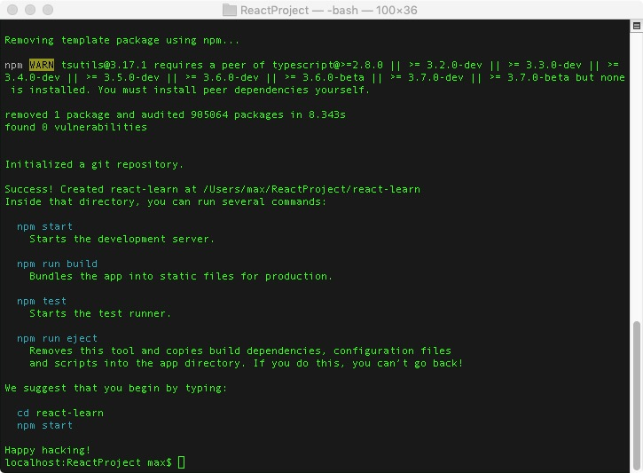
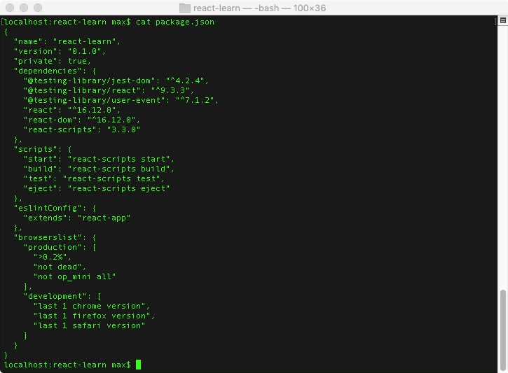
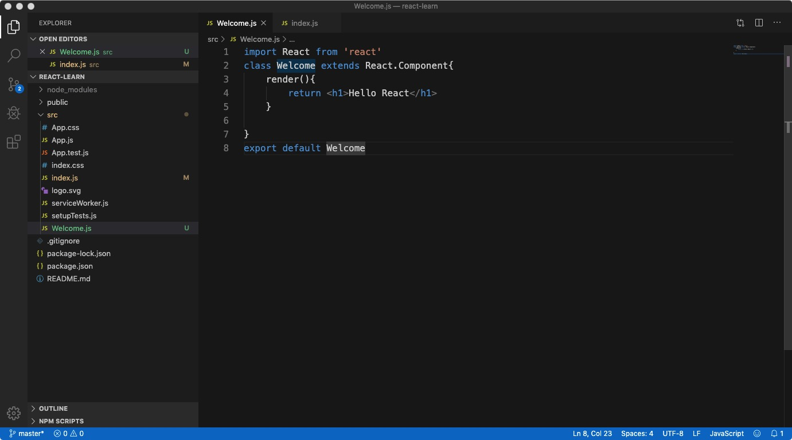

安装node
node -v查看是否已经安装
安装npm
npm -v查看是否已经安装
安装全局create-react-app
npm install -g create-react-app，什么是create-react-app是react提供的脚手架工具，是一个命令行工具，提供一系列和这个框架相关的功能，比如本地起一个开发服务器，静态验证代码格式，运行单元测试，构建成产环境代码。
官网的标语Create React apps with no build configuration，不需要任何配置就可以运行React应用。
执行第一行命令开始安装，其中-g是全局安装，是指向当前环境的全局变量，就可以在terminal中使用这个命令。安装过程中如果出现Missing write access to /usr/local/lib/node_modules执行命令的时候加上sudo
配置一个全家桶项目是非常繁琐的，要写非常多的配置文件，这里非常简单，并且配备了完备的测试框架，支持hotreload本地开发环境，集成了build脚本等等。
创建项目
首先创建一个react项目路径ReactProject/，以后所有的react项目都可以放在这个文件下面。cd ReactProject/，然后执行create-react-app ReactLearn，但是出问题了name can no longer contain capital letters，意思是名字中不能有大写也不能用驼峰命名，所以重新执行创建命令create-react-app react_learn，这次没有问题，等待创建完成，这个过程主要安装react、react-dom、react-scripts，时间大概20分钟，如图所示就创建完成了。

创建完之后，进入cd react-learn项目中，查看cat package.json看到如图所示

已经内置了几个命令npm start、npm build、npm test、npm eject，目前我们只需要了解start命令，作用是本地起一个开发服务器，然后执行npm start，浏览器会自动打开localhost:3000/这个网址，这是内置写好的一个欢迎页面，这就成功的配置本地开发环境。
编辑器
这里使用VS Code
项目结构
通过VS打开项目可以看到如下的项目结构
README.md 是关于create-react帮助文档
package.json
第一个组件Hello World
在src下面新建一个文件Welcome.js，引入依赖import React from 'react'，这里使用的ES6语法

JSX